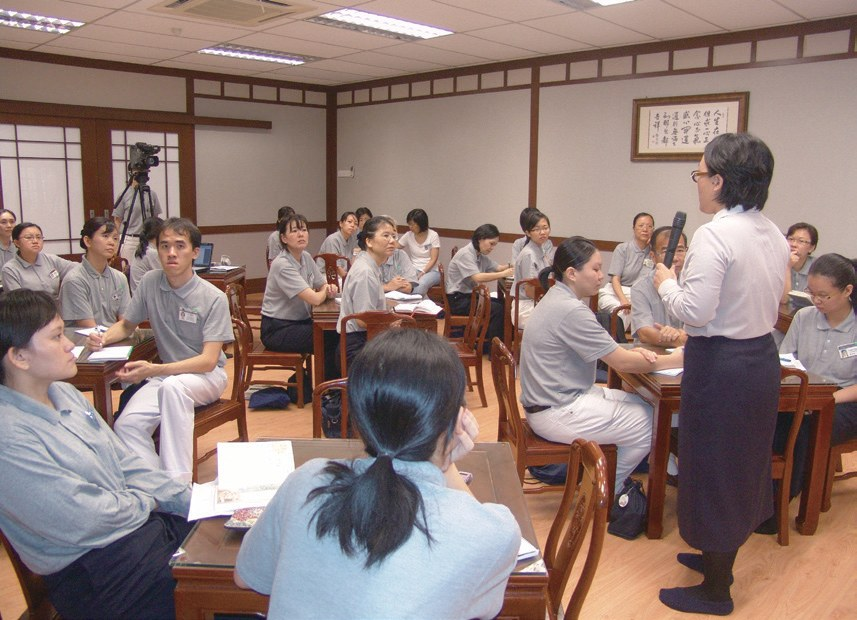
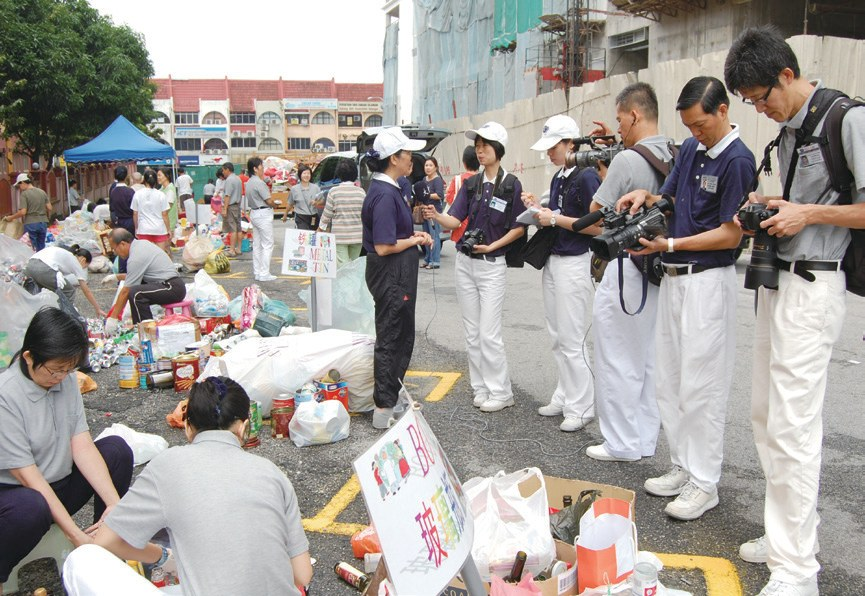
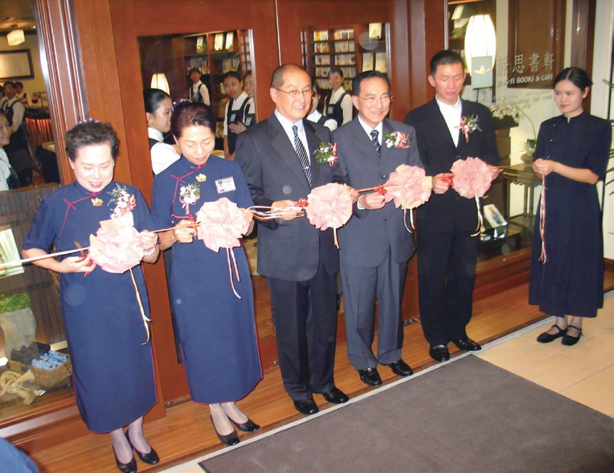
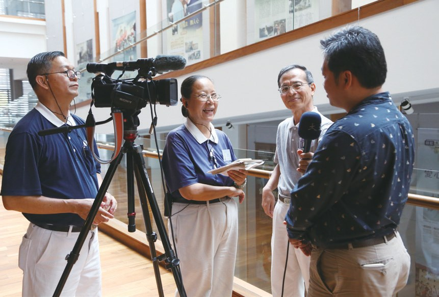
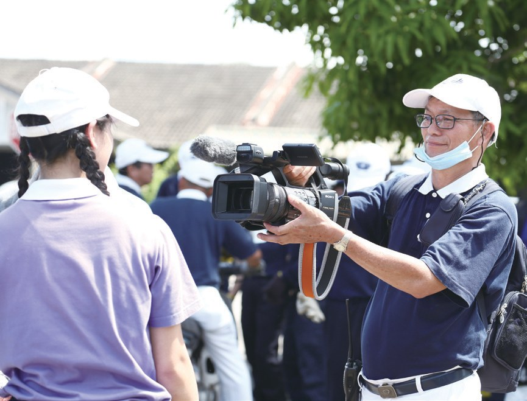
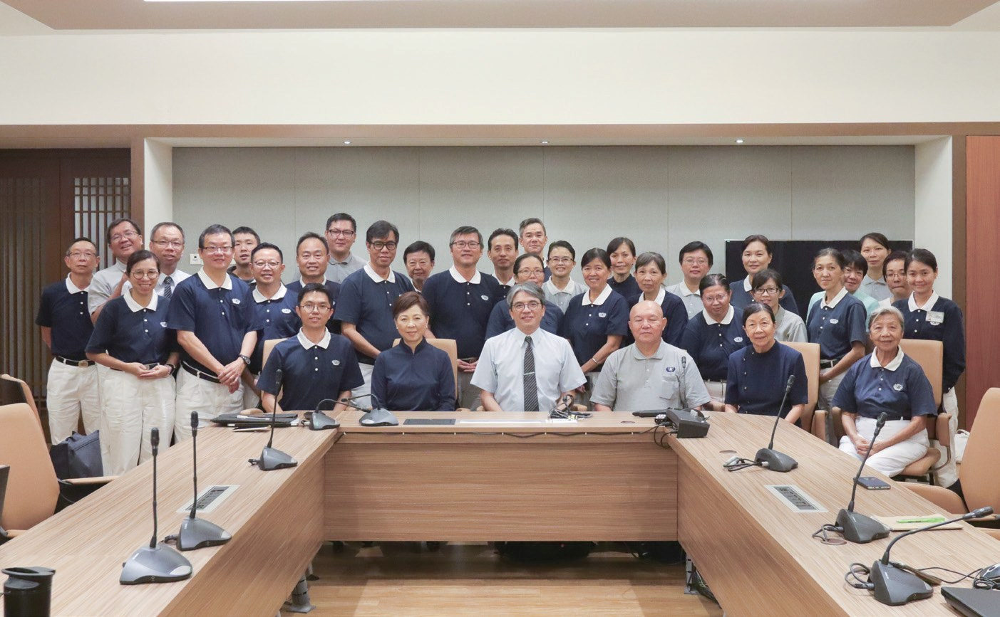

人文美善
歷史見證（下）
不是專業的人，能不能為歷史作見證？

先別急著下結論，讀完再說說你的想法～
下篇講「人文真善美」志工：拿筆的、拿相機的、扛錄影機的，大多不是專業出身。
你會讀到他們自己寫的編輯系統、一間月租一令吉的書軒，還有三位邊做邊學的志工。
下面是原書的節錄，紅色底線是我們替你標出的轉折點。
讀之前：你覺得記錄慈濟活動，最需要什麼？
筆、相機、錄影機
三種記錄的人，組成一個團隊。閱讀引導
2004年，為了讓《慈濟世界》內容更紮實，馬六甲期刊組在志工體系設立「筆耕隊」，召集志工協助撰寫文稿……
2008年，響應上人理念，雪隆分會開始整合筆耕、攝影和影視三合一的「人文真善美」志工團隊……

課程採用小組實作方式，每一小組各有筆耕、攝影和影視人員被安排報導特定活動。

一組一起出發。

……從收集資料、設備和交通，都由各小組安排，從磨合中培養團隊默契。
……不定期舉辦成果展，讓志工看見自己付出的身影。

這次看見自己。
3in1和手機錄影
馬來西亞和臺灣的電腦，操作系統的語言版本不同。閱讀引導
2013年12月3日，大馬版的圖像編輯系統「3in1」開發完成……
……也將這套系統帶回柬埔寨沿用。3in1圖像編輯系統不斷改良，大幅減輕同仁歸檔的作業，提高圖文報導的效率。

連柬埔寨也在用！
……以手機留下珍貴的照片與錄影記錄；截至2022年3月，有超過兩千六百多名志工與會眾受惠。

人人都能記錄？
- 2,600多名手機錄影課程受惠p.510
- 101則「志工故事館」短片p.510
一令吉的租金
佛教書籍在書店裡，常常擺在角落。閱讀引導
……尤其馬來西亞以伊斯蘭教為官方宗教，對於佛教出版品較為謹慎。
……但是佛教書籍歸為宗教命理書類，或擺放在角落，乏人問津。
……於2000年8月11日，全球第一家靜思書軒在檳城金融區成立。
猜一猜閱讀引導
實業家林孝式把商業大樓的空間借給慈濟開書軒，每月收多少租金？

……不為營利而設，並且是專款經營，完全沒動用慈濟會員的捐款。
不用會員的捐款。
至2022年，雪隆分會轄下聯絡據點共有十二間靜思書軒。
每一位同仁都是傳法者，應讓人一進到書軒，就能感受到德香、道香和法香。
上人說・p.512用心就是專業
一位扛錄影機，一位拿筆。閱讀引導
當第一次看到自己拍的畫面在大愛臺播出時，他喜悅地和同仁分享……
「承擔人文真善美幹事，才知道責任重大。只好一邊扛著機器，慢慢摸索，一邊找尋有心想加入人文真善美的有緣人。」
陳貴州說・p.513「上人常鼓勵大家『用心就是專業』，雖然志工們都不是專業領域的背景，但用心地邊做邊學……」
陳貴州在培訓會上分享・p.513越來越多的志工願意加入人文真善美志工行列，讓這個團隊成長茁壯。

團隊越來越大。

「人物故事最感人之處，就是平凡中必有不平凡，從細節裡尋找寶藏，敏銳觀察細心體會。……」
陳金香說・p.514……卻不懂得操作電腦，手寫的稿件得靠其他志工幫忙打字。
回國後，她天天抱著電腦，步行半小時到鄰近的靜思書軒請教同仁，從零學起……
去學打字！
……慈濟人就如一部部藏經，能用筆耕福田就是幸福。
鏡頭下的人生
不要讓一個人太孤單。閱讀引導
「一起加入人文真善美來記錄美善的人事物，不要讓我一個人太孤單。」
陳貴州鼓勵何永康・p.515
2010年，何永康卸下社區承擔，才真正拿起錄影機學習如何拍攝。
……他第一個反應不是自己傷到哪裡，而是趕緊檢查錄影機有沒有摔壞……
先看錄影機？
……不搶拍痛哭滿面的鏡頭，也不特寫哀傷驚怖的表情，而是藉由志工的關懷與疼惜，傳達對受災者的虔誠祝福。
拍溫暖的樣子。
人文志工就是要為時代作見證，為慈濟寫歷史，慈善與人文合一，將過往寶貴的藏經展現在眾人面前。
上人開示・p.517
相片真的會說話，過去的相片和現在的人物兩相對照，時代不同，但是真誠的愛不變。
上人開示・p.518停一停：誰讓你記住了？閱讀引導
選一位你印象最深的人。沒有標準答案。
有人邊扛機器邊找有緣人，有人走路去學打字，有人摔倒先護錄影機。哪一位讓你最有感覺？

一起回頭看看吧～
回望
依本章原文整理，每一條都標了原書頁碼。閱讀引導
背後原因
為什麼人人都能記錄

小川大多不是專業出身，怎麼也能記錄歷史？
- 小組實作
筆耕、攝影、影視一組一起出班。p.507
- 用心就是專業
雖不是專業背景，但用心地邊做邊學。p.513
- 人人真善美
用手機記錄，超過兩千六百多名志工與會眾受惠。p.510
後續發展
真善美一路走來

小禾從筆耕隊到志工故事館，經過了多少年？
- 2004
馬六甲設立「筆耕隊」。p.506
- 2008
雪隆整合三合一真善美團隊。p.507
- 2010.3
吉隆坡與巴生首次實作課程。p.508
- 2013.12.3
「3in1」圖像編輯系統完成。p.509
- 2017.12.15
首辦手機錄影及剪輯工作坊。p.510
- 2018
YouTube設立「志工故事館」。p.510
記錄美善的人
一分用心，各地開花
小禾這一篇裡，有哪些人用心記錄美善？
- 第一圈陳貴州
邊扛機器，邊找尋有緣人。p.513
- 第二圈何永康
被陳貴州鼓勵，拿起錄影機。p.515–516
- 第三圈柬埔寨
把3in1系統帶回柬埔寨沿用。p.509
以上只整理本章寫到的事；書裡沒寫到的，我們不替它下結論。
回頭看讀前的選擇閱讀引導
陳貴州說上人常鼓勵「用心就是專業」（p.513）；陳金香從零學起用電腦打字（p.515）；何永康摔倒時先檢查錄影機（p.516）。器材、技術都能學，先要有那分用心。
為什麼最擔心的是錄影機？
只有你自己看得到喔！
準備好了就一起出發～